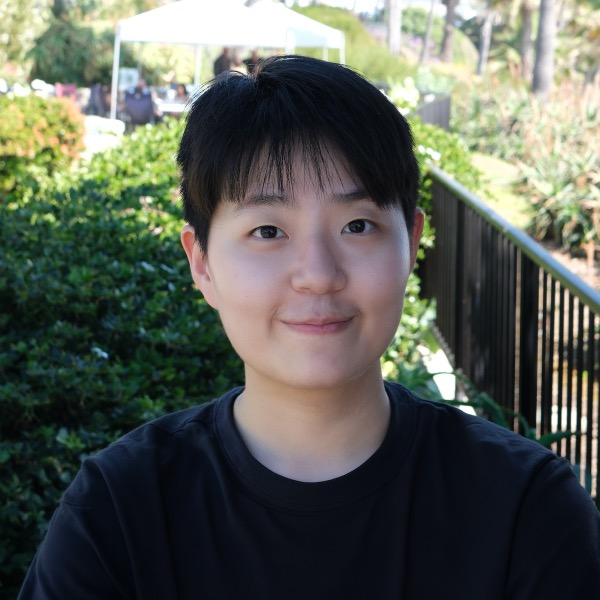

I'm a PhD candidate at Johns Hopkins University, advised by Steven Salzberg. I develop computational methods for gene annotation. The human gene catalogue is still incomplete, with missing or incorrect genes and isoforms; I use sequencing data and high-quality genome assemblies to close those gaps, and to study how genes vary and evolve across people.
I also have a separate line of research in AI for science, building multi-agent systems for scientific discovery. See AI for Science. Outside the lab, I've also co-founded Stitch, a nonprofit that combines a reference manager with a social network.
I'm from Korea and live in Baltimore, by the Chesapeake Bay. I run, lift, and play tennis, golf and chess.
If you found me as ‘HJ Ji’ on a paper, that’s me: Hyun Joo, a first name with a space in it.
See all publications, or Google Scholar.